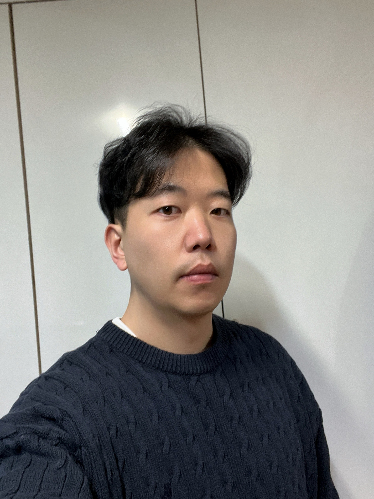

Computer Vision · 3D Perception · Generative Models
Taehyeon Choi
최태현 · Ph.D.
Ph.D., Electrical and Computer Engineering, Korea University, 2023
Dissertation: An Efficient Camera Ray Correction by 3D Residual Model
Research Professor, BK21 Educational Research Institute for AI-Contents Future Industry
Graduate School of Advanced Imaging Science, Multimedia & Film, Chung-Ang University
About
I am a computer vision researcher who has worked on deep learning for visual perception since 2016. My recent work builds end-to-end networks for 3D point cloud compression and upsampling (SAGANet, Unified-CUNet), emotion-aware image and color editing with diffusion and transformer models (SAGE), and CLIP-based multimodal anomaly detection. Earlier, I developed camera ray-correction models for near-central and refractive camera systems in autonomous driving.
I received my Ph.D. from Korea University under Prof. Sanghoon Sull, with a dissertation on efficient camera ray correction using a 3D residual model. I currently serve on the editorial board of TechArt: Journal of Arts and Imaging Science and review for Image and Vision Computing, The Visual Computer, Scientific Reports, and PLOS One.
Experience
Positions
Teaching
Selected Projects
Publications
Journal Articles
- Taehyeon Choi, Jinwan Park, "Pair-Free Affective Image Editing with the Likelihood Ratio of an Emotion-Conditional Diffusion Prior," 2026.submitted
- Taehyeon Choi, Jinwan Park, "SAGANet++: One Anisotropy Field for Reconstruction-Aware Keypoint Selection and Transformer-Based Point Cloud Upsampling," 2026.under review Preprint
- Taehyeon Choi, Jinwan Park, "Unified-CUNet: A Transformer-Based Framework for Surface-Aware Point Cloud Compression and Upsampling," 2026.minor revision Preprint
- 최태현, 박진완, "확산 기반 감성 색편집의 장면별 저랭크 증류: 콘텐츠 제작을 위한 실시간 적용과 시간 일관성," 2026.under revision
- 최태현, "Bandwidth-Adaptive Rate Control for Point Cloud Compression and Upsampling on a Frozen Backbone(고정 백본 기반 포인트 클라우드 압축 및 업샘플링을 위한 대역폭 적응형 전송률 제어)," 한국통신학회논문지, vol. 52, no. 4, Apr. 2027.accepted
- Taehyeon Choi, Jinwan Park, "SAGE: Spatially Aware Guided Emotion Color Transfer with Category-Adaptive Transformation," Image and Vision Computing, vol. 173, 106058, Sep. 2026. DOI
- 최태현, 박진완, "저출생 시대 한국 게임시장의 인구학적 성숙과 핵심 이용자 집중," 컴퓨터게임및콘텐츠 논문지, vol. 39, no. 8, pp. 47–56, Aug. 2026. DOI
- Taehyeon Choi, Jinwan Park, "SAGANet: Structure-Aware Geometric Anisotropy Network for Point Cloud Compression and Upsampling," IEEE Access, vol. 14, pp. 21949–21965, Feb. 2026. DOI
- Jaehyun Kim*, Chanyoung Kim*, Seongwook Yoon, Taehyeon Choi, Sanghoon Sull, "RBF-Based Camera Model Based on a Ray Constraint to Compensate for Refraction Error," Sensors, vol. 23, no. 20, 8430, Oct. 2023. DOI
- Jaehyun Kim, Seongwook Yoon, Taehyeon Choi, Sanghoon Sull, "Unsupervised Video Anomaly Detection Based on Similarity with Predefined Text Descriptions," Sensors, vol. 23, no. 14, 6256, Jul. 2023. DOI
- Taehyeon Choi, Seongwook Yoon, Jaehyun Kim, Sanghoon Sull, "Noniterative Generalized Camera Model for Near-Central Camera System," Sensors, vol. 23, no. 11, 5294, Jun. 2023. DOI
- Seongwook Yoon, Taehyeon Choi, Sanghoon Sull, "Depth Estimation from Stereo Cameras through a Curved Transparent Medium," Pattern Recognition Letters, vol. 129, pp. 101–107, Jan. 2020. DOI
- Seungwook Cha, Taehyeon Choi, Hoonjae Lee, Sanghoon Sull, "An Optimized Backlight Local Dimming Algorithm for Edge-Lit LED Backlight LCDs," IEEE/OSA Journal of Display Technology, vol. 11, no. 4, pp. 378–385, 2015. DOI
- Taehyeon Choi, Jeongmin Ji, Joonhoon Park, Sangkeun Lee, "Efficient Edge-Directed Deblocking Algorithm for KOMPSAT-2 Satellite Images," The Imaging Science Journal, vol. 62, no. 2, p. 79, 2013. DOI
- Hoonjae Lee, Taehyeon Choi, Sanghoon Sull, "Frame Layer CBR Encoding to Reduce Large Picture Quality Fluctuation," IEEE Transactions on Consumer Electronics, vol. 58, no. 3, pp. 1031–1037, Aug. 2012. DOI
- 최태현, 지정민, 박준훈, 최명진, 이상근, "위성영상에서의 적응적 압축잡음 제거 알고리즘," 대한전자공학회 논문지 SP편, vol. 48, no. 5, 2011.
Conference Papers
- Taehyeon Choi, Jinwan Park, "Sparse Point Cloud Reconstruction by Directed Compressed Sensing Network," ICUFN 2025, Lisbon, Portugal, Jul. 2025. DOI
- 최태현, 이하린, 박진완, "시각적 대화: 생성 예술의 설명 가능한 신경망 연구," 대한전자공학회 하계종합학술대회, Jeju, Jun. 2025.
- 최태현, 박진완, "LiDAR와 다중 심도 카메라 간의 보정 최적화를 위한 초기 변수 결정 방법," 전자정보통신 학술대회, Jeju, Dec. 2024.
- 온장훈, 최상필, 최태현, 김명섭, 장가람, 이동혁, 배지훈, 박재한, "보행 패턴 추정을 위한 멀티모달 센서 기반 모듈형 데이터 획득 시스템 개발," 한국생산제조학회 추계학술대회, Jeju, Dec. 2023.
- 박지원, 최태현, 설상훈, "딥러닝 기반 스테레오 영상의 시차지도 추정을 위한 개선된 스케일 불변 손실함수 구현," 대한전자공학회 추계학술대회, Incheon, Nov. 2017.
- 최태현, 윤성욱, 설상훈, "스테레오 카메라에서 투명 인터페이스 왜곡으로 인한 거리 측정 오차 발생 분석에 관한 연구," 대한전자공학회 추계학술대회, Incheon, Nov. 2017.
- Taehyeon Choi, Jeongmin Ji, Joonhoon Park, Sangkeun Lee, "Edge Adaptive Deblocking Method in the Satellite Image for Real-Time Application," IEEE ICCE-Berlin, Berlin, Germany, Sep. 2011. DOI
- 최태현, 김종수, 이상근, "양방향 필터와 PCA를 이용한 블록화 현상 제거 알고리듬," 대한전자공학회 하계종합학술대회, Jeju, Jun. 2010.
Academic Service
Editorial Board
- TechArt: Journal of Arts and Imaging Science — Editorial Board MemberInternational journal on technology and art, published by Chung-Ang University · Editorial board
Reviewer
- Image and Vision Computing (Elsevier)23 reviews since 2025
- PLOS One2 reviews, 2026
- The Visual Computer (Springer)2 reviews, 2026
- Scientific Reports (Nature Portfolio)1 review, 2026
Patents
- 사전 학습된 이상 탐지 모델을 이용하여 비디오의 이상 탐지를 수행하는 방법 및 장치KR application 10-2024-0011782, Jan. 2024 · with 김재현, 설상훈, 윤성욱
- 카메라 렌즈 오염 경고 장치 및 방법KR registration 10-2348123, Jan. 2022 · with 손민성, 최진욱, 설상훈, 윤성욱, 임재영
- 차량의 장애물 검출 장치 및 방법KR registration 10-2295579, Aug. 2021 · with 윤성원, 설상훈, 윤성욱, 이재훈, 임재영
- 투명 소재 곡면값 산출 방법 및 장치KR registration 10-1866804, Jun. 2018 · with 설상훈, 윤성욱